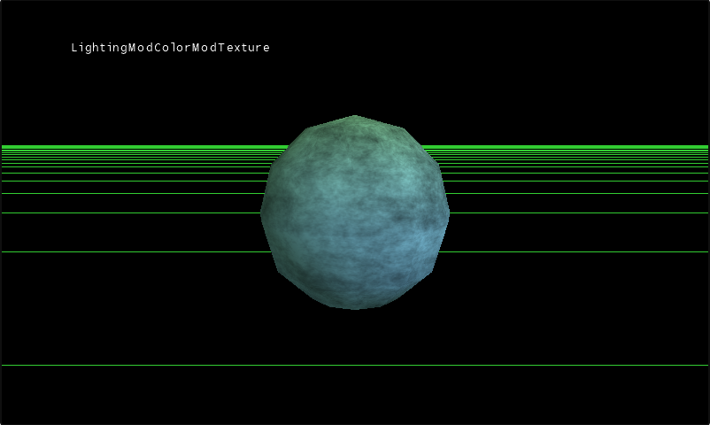

Textures and Colors
Ported from Microsoft's XNA 4.0 Shader Series 2: Textures and Colors Sample.
Source for this sample on GitHub ↗

Play ▸Opens in a new tab and runs in this browser. Click the canvas first so it receives the keyboard.
About this sample
A pixel's final colour can come from anywhere. This sample takes three sources — the lighting calculation, the colour stored per vertex, and the colour sampled from a texture — and cycles through the ways they can be combined.
It opens on the ordinary case, all three multiplied together the way a lit textured model usually looks. Stepping through the techniques then pulls them apart: each element on its own, then simple pairs, then alternative combinations of all three. Seeing the same mesh under each in turn is the point — the arithmetic is arbitrary, and the sample is an argument for treating it that way.
It is the second sample in the Shader Series and builds on Vertex Lighting, adding HLSL textures and samplers, uniform boolean parameters, and per-vertex colours. The technique named LightingOnly is the one that matches the earlier sample's effect.
Controls
| Action | Keyboard | Gamepad |
|---|---|---|
| Rotate the camera | W A S D | Right stick |
| Rotate the mesh | Arrow keys | Left stick |
| Zoom in | Z | A |
| Zoom out | X | B |
| Next shader technique | Space | Y |
| Next 3D model | Tab | X |
| Exit | Esc | Back |
Space is the interesting one: it is what walks through the combinations the sample exists to show. In the browser, exiting ends the sample rather than closing the tab.